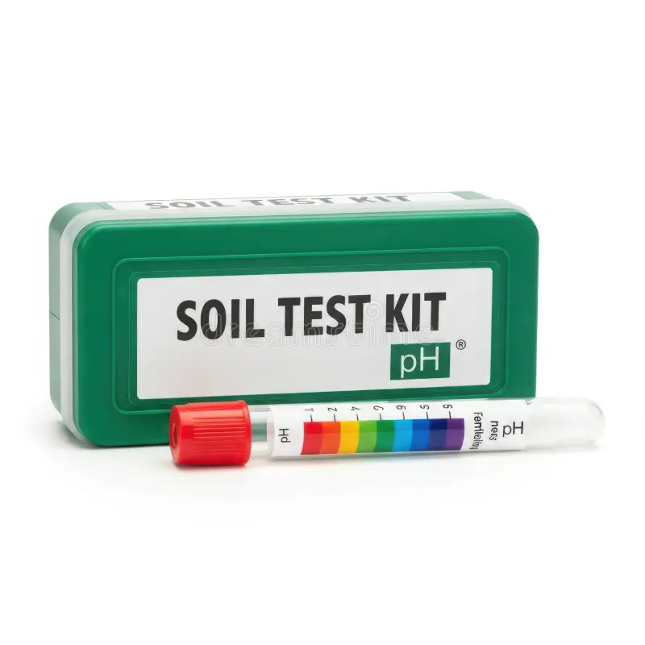
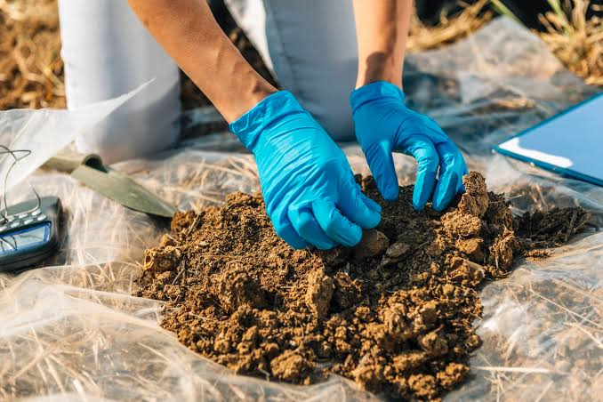

Soil Testing Kit
Learn what a soil testing kit does, how to use it, where to buy it online or offline, and indicative prices.
- pH, N, P & K testing basics
- Step-by-step usage guide
- Online & offline buying guidance
Choose a soil service and get practical information for your farm.

Learn what a soil testing kit does, how to use it, where to buy it online or offline, and indicative prices.

Upload a clear soil photo and let AI provide a visual, preliminary assessment.
Find registered soil testing centres by state and district, or use your location to sort nearby results by distance.

Enter values from your soil test report for an AI-assisted interpretation.
A soil photo gives a visual AI assessment only. Exact pH and nutrient values should come from a proper soil test.